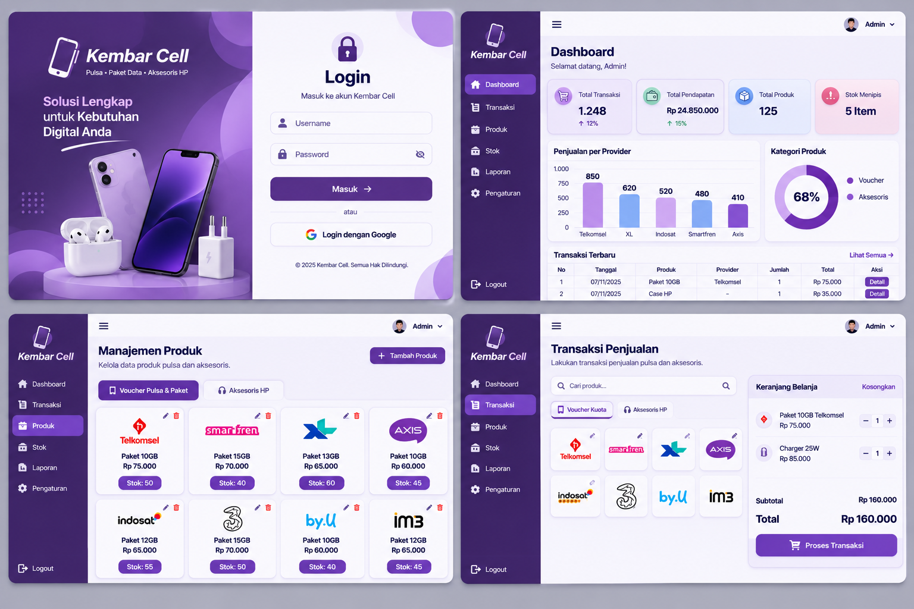

Counter Cashier Management System merupakan aplikasi kasir berbasis web yang dikembangkan untuk membantu proses pengelolaan operasional konter secara lebih terorganisir dan efisien. Sistem ini memungkinkan pengguna untuk mengelola data produk, mencatat transaksi penjualan, memantau ketersediaan stok barang, serta mengakses laporan penjualan dalam satu platform terintegrasi. Dengan memanfaatkan database MySQL sebagai media penyimpanan data, seluruh aktivitas transaksi dapat terdokumentasi dengan baik sehingga mengurangi risiko kehilangan data dan kesalahan pencatatan yang sering terjadi pada proses manual.
... Lihat Selengkapnya